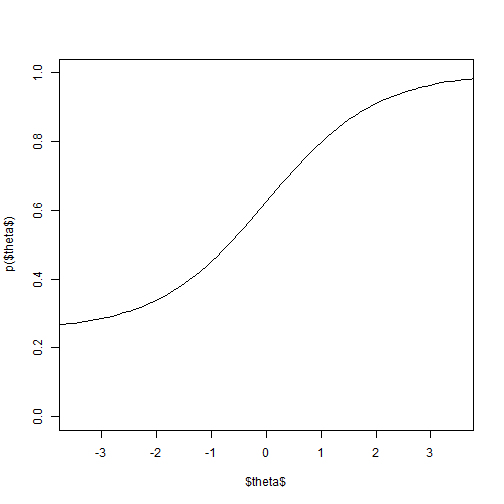
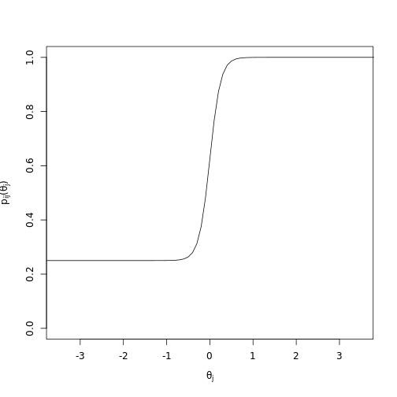
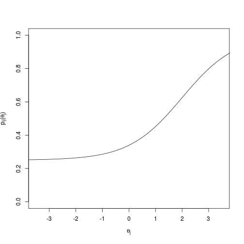

StatNLP: Giving NLP Models Standardized Tests
Wed 17 October 2018
This post is meant as a companion to our EMNLP 2016 paper ``Building an Evaluation Scale using Item Response Theory'' [[arXiv link][https://arxiv.org/abs/1605.08889]]. It's quite a bit overdue, but hopefully this post will be useful to those who haven't seen IRT before.
Introduction
Let's start by thinking about the typical supervised machine learning setup. There is some training data, a held-out test set, and a machine learning model. The goal is to use the training data to learn a model that performs well on the test set. ``Performs well'' is usually measured by some aggregate statistic such as accuracy, precision/recall, etc. These aggregate statistics assume that each test set example is as important in determining model performance as every other test set example. But what if that isn't the case? What if certain examples are so easy that labelling them incorrectly is disastrous? Or on the other hand, what if certain examples are so hard that no model labels them correctly (except your new deep deep deep network)?
Characteristics such as difficulty are often used to assess humans in psychometrics, specifically a paradigm known as Item Response Theory (IRT). The high-level idea with IRT is that if you have enough test-takers provide answers to questions on a test (``items,'' hence the Item in IRT), you can learn latent parameters of the items as well as estimate a latent ability trait of the test-takers themselves. IRT is popular in standardized tests such as the SAT and the GMAT. It's used to assess the test-takers but also to select appropriate items for the tests themselves (if a test question is too easy, there's no need to include it). What we wanted to do was take the IRT methodology and apply it to machine learning models, specifically models trained to do the natural language processing (NLP) natural language inference (NLI) task.
IRT
The key driver behind IRT is what's known as the Item Characteristic Curve (ICC). Each item has an associated ICC, which can take certain forms depending on the IRT model that you're looking at. A popular model (and the one we used in our paper) is the 3 Parameter Logistic (3PL) model:
Here, \(\theta_j\) is the latent ability parameter of test-taker \(j\), and \(a_i\), \(b_i\), and \(c_i\) are item \(i\)'s discriminatory, difficulty, and guessing parameters, respectively. A typical IRT curve will look something like this:

Our x-axis is \(\theta_j\), the latent ability parameter. The y-axis is \(p_{ij}(\theta_j)\), the probability that an individual with a certain ability level will answer this item correctly. The curve is monotonically increasing, which makes sense. As the ability of an individual increases, we expect that the probability of that individual answering correctly will also increase. \(a_i\), the discriminatory parameter, represents the slope of the curve at its steepest point. \(a_i\) should be steep enough that in a relatively short range, there is a sizeable jump in \(p_{ij}(\theta_j)\), but shouldn't be so steep that the range is tiny. An item with too steep of a slope is only useful in a very small ability range:

\(b_i\), the difficulty parameter, represents the point on the x-axis where an individual has a 50\% chance of answering the item correctly.
Since \(\theta\) is a unit Gaussian (\(\theta_j \sim N(0, 1)\)), we want the value of \(b_i\) to fall somewhere between \(-3\) and \(3\) in most cases, since that covers 99.7\% of people.
The next two plots show an easy'' and ahard'' item where the difficulty parameters are \(-2\) and \(2\), respectively:


PARAGRAPH ON GUESSING
Looking at NLI
NLI EXAMPLES
WHY IRT IS USEFUL HERE (TABLE)
Data Collection
AMT
IRT Analysis
Model fitting, removing items, etc.
Results
tables, plots, etc.